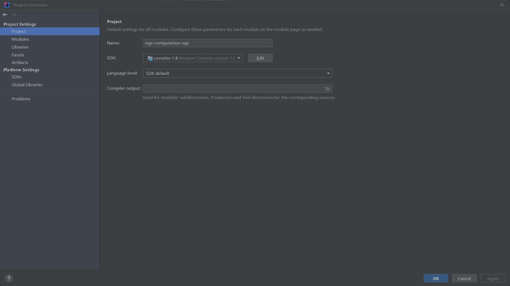
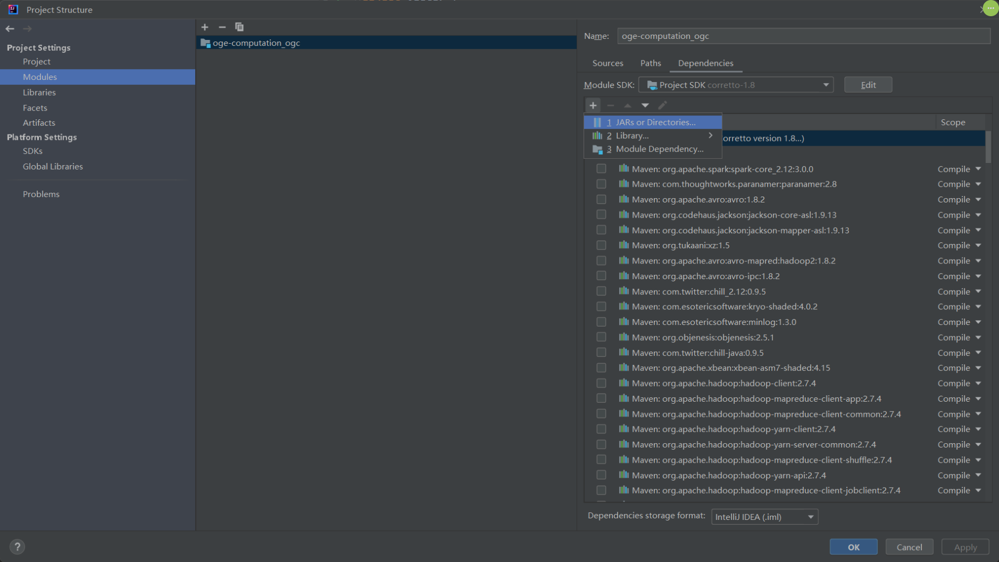
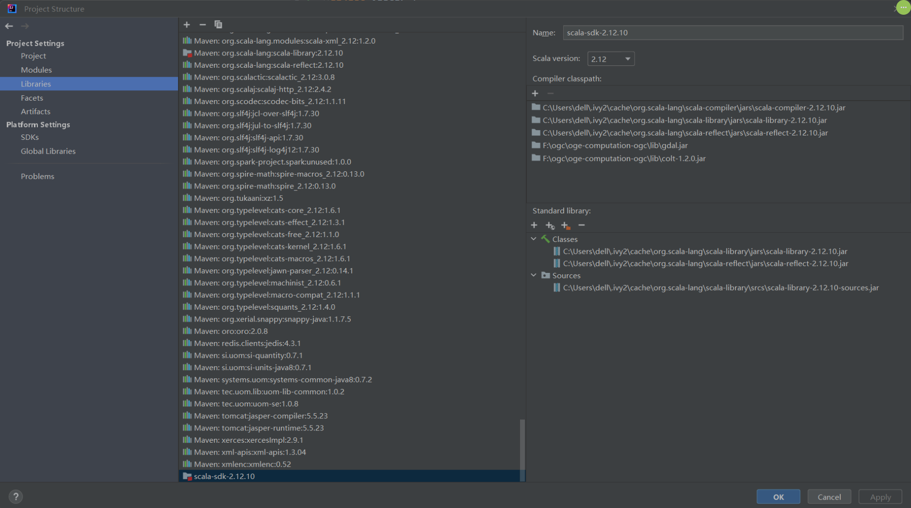
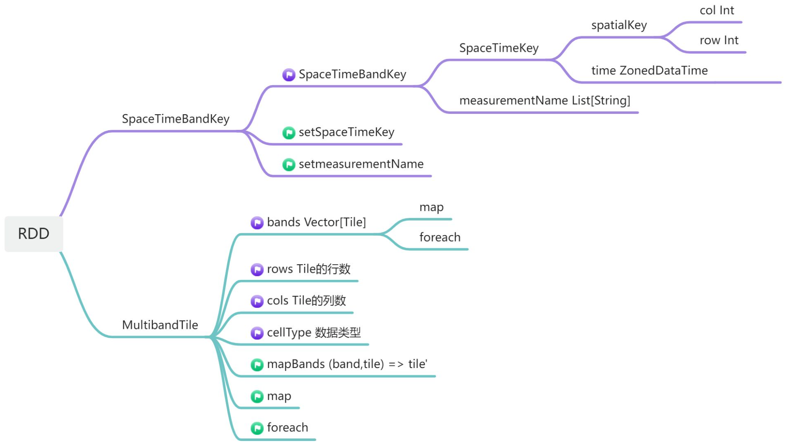
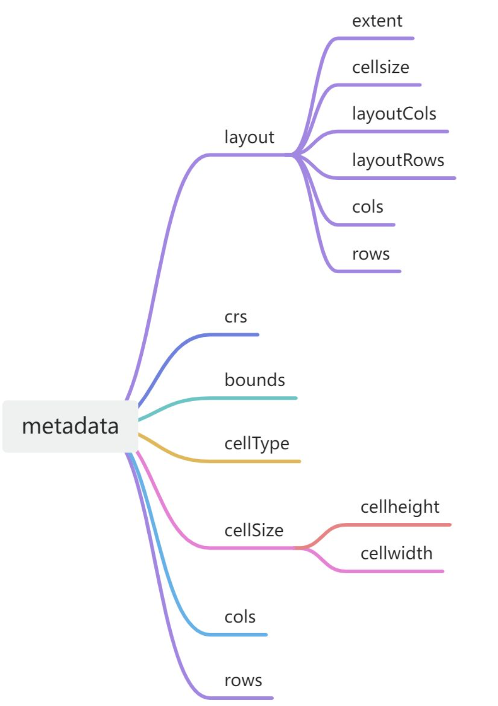
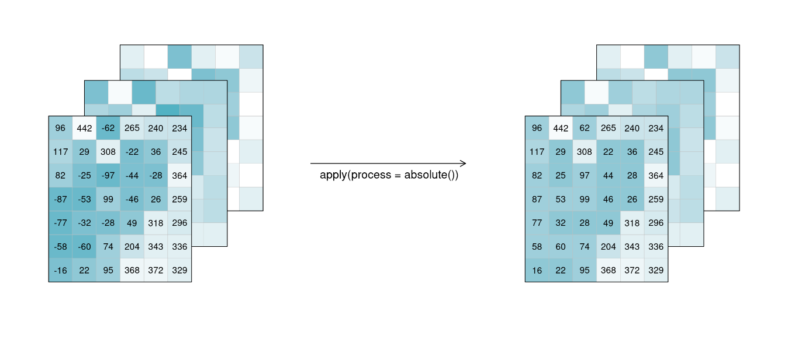
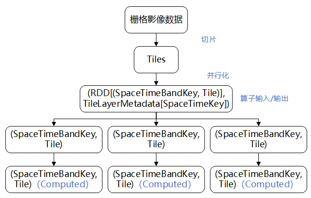
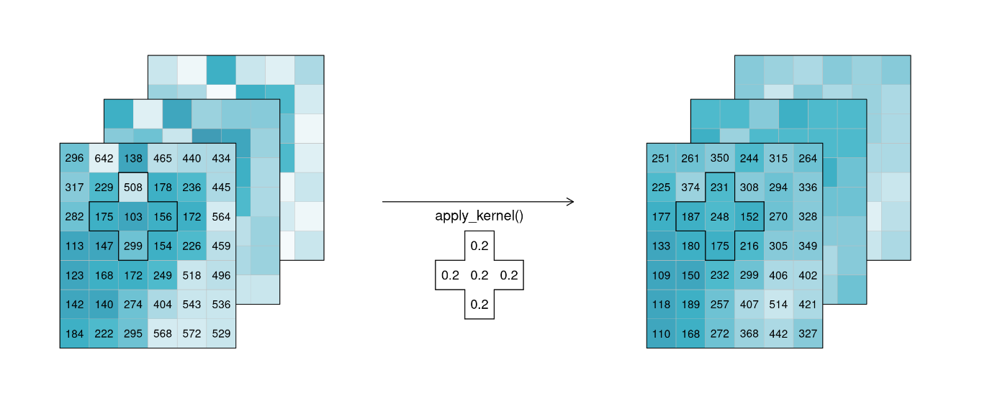
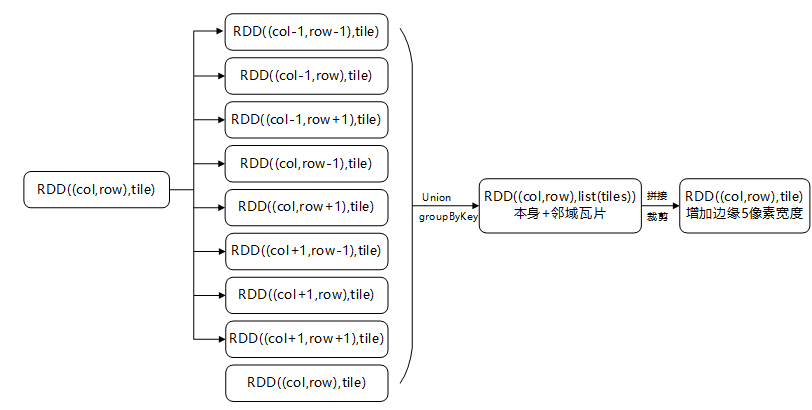

OGE-Computation是基于Spark开源并行计算框架开发，使用Scala语言构建的OGE计算功能后端。OGE-Computation承担了OGE中开发中心的计算功能，包括数据的读取、算法的调用、数据的并行处理、结果的返回等。OGE-Computation的计算建立在Spark RDD（抽象弹性分布式数据集, Resiliennt Distributed Datasets）的基础上，可以调用使用Scala开发的OGE原生算子和封装后的GRASS或QGIS算子，以实现对栅格数据、矢量数据和其他类型数据的处理。OGE-Computation中使用了geotrellis库、gdal库、colt库和jts库，以实现栅格计算、几何计算等计算功能。
使用IDEA，可以非常简单地完成OGE-Computation的配置。以下是OGE-Computation的配置流程：


选择项目里lib文件夹下的colt和gdal

在whu.edu.cn.debug.CoverageDebug中，包含了可以直接执行的示例：
def main(args: Array[String]): Unit = {
// 创建SparkContext
val conf: SparkConf = new SparkConf().setMaster("local[8]").setAppName("query")
val sc = new SparkContext(conf)
// 读取LandSat文件并将其保存为geotiff格式图像
val coverage = Coverage.load(sc, "LC81220392015275LGN00","LC08_L1T",10)
makeTIFF(coverage,"D:\\LC8")
println("Finish!")
}
如果在makeTIFF函数的保存路径下查看到相应的文件，证明函数执行成功。
OGE-Computation非常易于本地调试。用户可以在本地读取读取数据，构建算法，保存处理结果并在本地数据查看器（QGIS或ArcGis）中查看。以下是如何在本地调试NDWI算法的展示，该函数在whu.edu.cn.debug.CoverageDebug中： 读取数据并调用算法
def test_LandSat8(): Unit = {
// 创建sc
val conf: SparkConf = new SparkConf().setMaster("local[0]").setAppName("test")
val sc = new SparkContext(conf)
// 从数据库中读取LandSat 8栅格数据
val coverage = Coverage.load(sc, "LC08_L1GT_123038_20190105_20200830_02_T2","LC08_L1GT_C02_T2",10)
// 或者，从本地文件系统中读取geotiff数据
val filePath = "file_location"
val coverage_local = RDDTransformerUtil.makeChangedRasterRDDFromTif(sc, filePath)
// 调用Coverage算法进行处理
val ndwi = Coverage.normalizedDifference(coverage, List("B3","B5"))
val ndwi_local = Coverage.normalizedDifference(coverage_local, List("B3","B5"))
// 保存结果到本地
CoverageDebug.makeTIFF(ndwi, "D:\\ndwi")
CoverageDebug.makeTIFF(ndwi_local, "D:\\ndwi_local")
}
OGE-Computation还可以模拟在服务器上的调用方式，通过解析代表计算流程的有向无环图进行算法调试。通过执行whu.edu.cn.trigger.Trigger.main，可以指定有向无环图文件进行解析：
def main(args: Array[String]): Unit = {
workTaskJson = {
val fileSource: BufferedSource = Source.fromFile("src/main/scala/whu/edu/cn/testjson/test.json")
val line: String = fileSource.mkString
fileSource.close()
line
} // 任务要用的 JSON,应当由命令行参数获取
dagId = Random.nextInt().toString
dagId = "12345678"
userId = "test-user"
//创建sc
val conf: SparkConf = new SparkConf()
.setMaster("local[8]")
.setAppName("query")
val sc = new SparkContext(conf)
//执行dag逻辑
runMain(sc, workTaskJson, dagId, userId)
println("Finish")
sc.stop()
}
以下介绍OGE-Computation中的数据结构，以及如何使用OGE-Computation构建算法。
OGE-Computation中的Coverage指的是一景包含多个波段的影像及影像原信息的图像。Coverage中包含RDD[(SpaceTimeBandKey, MultibandTile)] 和 TileLayerMetadata[SpaceTimeKey]两个部分，即一个RDD和一组metadata。 RDD[(SpaceTimeBandKey, MultibandTile)] 使用Map结构，通过键SpaceTimeBandKey和值MultibandTile对影像数据进行管理。每一组(SpaceTimeBandKey, MultibandTile)对应影像空间上的一个数据切片。每个切片的空间维度大小固定为256像素*256像素，波段维度大小为该影像包含的所有波段。SpaceTimeBandKey中包含spatialKey、time 和measurementName三个属性，分别对应该瓦片在整张图像的行列序号、影像时间和波段名称信息。MultibandTile包含多个成员：
RDD的数据结构如下图所示：

metadata中记录了影像的元信息，其中几个比较重要的属性是：metadata的结构图如下图所示。其中部分属性信息存在冗余。

OGE-Computation的Feature格式表示为RDD[(String,(Geometry, Map[String, Any]))]，其中的String为id，唯一标识某条矢量数据；Geometry为JTS的数据结构，存储几何数据，Map[String,Any]为属性数据，存储矢量的属性数据，其中String是属性的key，Any是任何数据类型的value。当featureRDD中只有一个元素时，它代表单个Feature；当featureRDD中有多个元素时，它代表一个Feature集合。
OGE-Computation从PostgreSQL中获取数据的元信息，从对象存储系统中读取栅格数据，从Hbase中读取矢量数据。这些功能可以通过以下函数调用：
// 根据产品和影像ID获取栅格数据
val coverage = Service.getCoverage(sc, coverageID, productID, level = level)
// 根据用户ID和影像ID，从用户空间获取栅格数据
val coverage = Coverage.loadCoverageFromUpload(sc, coverageID, userId, dagId)
// 根据用户ID和影像ID获取矢量数据
val feature = Service.getFeature(sc, featureId, dataTime, crs)
// 根据用户ID和影像ID，从用户空间获取栅格数据
val feature = Feature.loadFeatureFromUpload(sc, featureId, userId, dagId, crs)
或者，如果只是想从本地文件系统中读取数据，可以通过以下方式读取本地数据：
// 从本地文件系统中读取geotiff数据
val coverage = RDDTransformerUtil.makeChangedRasterRDDFromTif(sc, filePath)
// 从本地文件系统中读取geojson
val file = Source.fromFile(filePath).mkString
val feature = Feature.geometry(sc, file, crs)
OGE-Computation对栅格数据的结果返回，提供了以tms服务返回图像、以批处理保存图像和本地保存三种数据返回方式。这些功能可通过以下函数调用：
// 以tms服务返回图像，在服务器上执行时，结果将保存在服务器上并返回tms服务地址
Coverage.visualizeOnTheFly(sc, coverage, VisualizationParam)
// 以批处理的方式保存图像,结果会保存在对象存储系统中
Coverage.visualizeBatch(sc, coverage, BatchParam, dagId)
// 以geotiff图像格式保存在本地文件系统中
CoverageDebug.makeTIFF(coverage, coverageName)
对矢量数据的结果返回，提供了以数据发布的方式返回矢量、本地保存geojson文件和本地保存shp文件三种数据返回方式。这些功能可以通过以下函数调用：
// 数据发布的方式返回矢量，在服务器上执行时，结果将保存在服务器上并返回数据地址
Feature.visualize(feature)
// 以geojson格式保存在本地文件系统中
BufferedWriter(new FileWriter(outputVectorPath)).write(Feature.toGeoJSONString(feature))
// 以shp格式保存在本地文件系统中
Feature.saveFeatureRDDToShp(feature, outputShpPath)
对于其他类型数据，例如Number、String类型的数据，在前端Python通过log函数请求数据，在OGE-Computation中已将该请求进行封装，函数只需返回对应的值即可。 对于算子编写者，只需要在Trigger.func里，将coverage、feature、string、number计算的返回值加入到对应的coverageRddList、featureRddList、StringList、intList或doubleList中，即可在返回结果时返回对应结果。例如：
// 返回值为栅格算子
case "Coverage.normalizedDifference" =>
coverageRddList += (UUID -> Coverage.normalizedDifference(coverageRddList(args("coverage")), bandNames = args("bandNames").substring(1, args("bandNames").length - 1).split(",").toList))
// 返回值为矢量算子
case "Feature.polygonizeByQGIS" =>
featureRddList += (UUID -> QGIS.nativePolygonize(sc, featureRddList(args("input")).asInstanceOf[RDD[(String, (Geometry, mutable.Map[String, Any]))]], keepFields = args("keepFields")))
// 返回值为字符串的算子
case "Coverage.bandNames" =>
stringList += (UUID -> Coverage.bandNames(coverage = coverageRddList(args("coverage"))))
// 返回值为数字的算子
case "Coverage.bandNum" =>
intList += (UUID -> Coverage.bandNum(coverage = coverageRddList(args("coverage"))))
要开发一个OGE-Computation算子，包括函数编写、Trigger入口的编写和json解析文件的编写三部分。
函数入口的编写：Trigger对代表计算流程的json格式的有向无环图进行解析。因此，需要在Trigger的func函数中，添加实际计算的入口。Trigger入口的编写可以参考现有的函数入口编写方法。例如，Coverage.normalizedDifference函数在Trigger中的入口为：
case "Coverage.normalizedDifference" =>
coverageRddList += (UUID -> Coverage.normalizedDifference(coverageRddList(args("coverage")),
bandNames = args("bandNames").substring(1, args("bandNames").length - 1).split(",").toList))
其中，case "Coverage.normalizedDifference" =>用于匹配计算流程图中的函数名；coverageRddList是以键值对形式记录的所有栅格ID和栅格RDD的对应情况；UUID是每个对象的唯一标识ID，唯一对应一个对象；Coverage.normalizedDifference(coverageRddList(args("coverage")),
bandNames = args("bandNames").substring(1,
args("bandNames").length -
1).split(",").toList)是函数实际调用的位置，其中，coverageRddList(args("coverage"))是通过输入参数的UUID来获取CoverageRDD，bandNames = args("bandNames").substring(1,
args("bandNames").length -
1).split(",").toList)将用户输入的String格式的bandNames转换为Coverage.normalizedDifference函数要求的List参数输入函数。其中，args()内填写的变量名称需要与下一步json解析文件中的变量名称相同。
json解析文件的编写：为了OGE-Python和OGE-Computation可以正确地进行数据和算法交互，需要编写algorithms.json和algorithms_ogc.json文件。以Coverage.normalizedDifference算子为例，其在两个文件中的内容是相同的，均为：
"Coverage.normalizedDifference": {
"description": "Computes the normalized difference between two bands.The normalized difference is computed as (first − second) / (first + second). ",
"returns": "Coverage",
"args": [
{
"name": "coverage",
"type": "Covergae",
"description": "The input covergae"
},
{
"name": "bandNames",
"type": "List<String>",
"description": "A list of names specifying the bands to use. If not specified, the first and second bands are used",
"optional": "True",
"default": "None"
}
]
}
其中，Coverage.normalizedDifference为函数名，description为算子的描述，returns为算子的返回值类型，args为函数的输入参数，Coverage.normalizedDifference输入两个参数，使用列表的形式记录，分别为Covergae类型的名为coverage的参数，和List<String>类型的名为bandNames的参数；args中的name为参数的名称，type为参数类型，description为参数的描述，optional为True表示着参数是可选参数，default为参数的默认值。

像素与像素之间各自单独计算，互不影响。上图展示了绝对值预算的基本过程，通过对图像的每个像素求绝对值，得到结果图像。CoverageUtil.coverageTemplate(coverage,func)提供了对一景影像的局部进行运算的方法，该函数输入一景影像和对一个Tile进行运算的函数，返回局部计算的结果。具体算法可以参考典型算子样例介绍-单Coverage计算三角函数。

诸如卷积运算等邻域计算的结果像素值不仅需要像素值本身，还要考虑像素邻域。上图展示了邻域计算的基本过程。这种邻域可以是空间、时间或波段性质的。由于这种计算的数据来源跨瓦片，因此在运算时，需要拼接后再进行对应的邻域计算，最终将包含多余边缘信息的瓦片裁去边缘部分。邻域计算的方法可以参考典型算子样例介绍-单Coverage卷积运算。
两Coverage进行计算时，由于可能存在空间维度和分辨率的不一致，因此在计算前，需要先将两Coverage进行空间维度和分辨率的对齐。CoverageUtil.coverageTemplate(coverage1,coverage2,func)提供了两景影像进行运算的方法，该函数输入两景影像和一个对tile进行处理的函数，会在运算过程中将coverage2通过重投影对齐到coverage1的空间维度下，并通过func函数对二者空间位置相同的像素进行计算，返回计算后的结果。两Coverage计算可以参考典型算子样例介绍-两Coverage相加。
OGE-Computation的Feature以RDD格式存储，其格式表示为RDD[(String,(Geometry, Map[String, Any]))]。矢量计算的算子的几何计算，主要依赖于jts的geometry库。详情可以查阅jts的文档：https://locationtech.github.io/jts/。矢量计算的算子的属性计算，主要通过修改Map[String, Any]实现。Feature计算可以参考典型算子样例介绍-Feature计算缓冲区。
使用CoverageUtil.coverageTemplate(coverage,func)函数，可以对图像进行局部计算。在geotrellis.raster.mapalgebra.local中，提供了三角函数的计算函数。这里使用Sin函数，来计算图像的每个像素的Sin值：
def sin(coverage: (RDD[(SpaceTimeBandKey, MultibandTile)], TileLayerMetadata[SpaceTimeKey])): (RDD[(SpaceTimeBandKey, MultibandTile)], TileLayerMetadata[SpaceTimeKey]) = {
coverageTemplate(coverage, tile => Sin(tile))
}
在完成Sin函数的编写工作后，需要在Trigger中添加函数的入口：
case "Coverage.sin" =>
coverageRddList += (UUID -> Coverage.sin(coverage = coverageRddList(arg("coverage"))))
在Trigger中添加函数的入口后，需要在json解析文件中添加函数的解析规则：
"Coverage.sin": {
"description": "Computes the sine in radians of the input.",
"returns": "Coverage",
"args": [
{
"name": "coverage",
"type": "Coverage",
"description": "The coverage for operation"
}
]
}
至此，即完成了Coverage.sin函数的编写。
使用CoverageUtil.coverageTemplate(coverage1,coverage2,func)函数，可以实现对两张不同空间位置的影像的叠置处理。以相加为例，这里展示了如何计算两个有着相同波段的影像的相加计算：
def add(coverage1: (RDD[(SpaceTimeBandKey, MultibandTile)], TileLayerMetadata[SpaceTimeKey]),
coverage2: (RDD[(SpaceTimeBandKey, MultibandTile)], TileLayerMetadata[SpaceTimeKey])): (RDD[(SpaceTimeBandKey, MultibandTile)], TileLayerMetadata[SpaceTimeKey]) = {
coverageTemplate(coverage1, coverage2, (tile1, tile2) => Add(tile1, tile2))
}
在完成函数编写后，还需要在Trigger中添加函数入口并在json解析文件中添加函数的解析规则。
卷积运算需要将不同瓦块的影像根据卷积核大小进行拼接。具体而言，这里使用了先将CoverageRDD collect，再填充各个瓦块，最后使用填充结果对每个瓦块进行卷积运算的方案。详细内容可以查看代码中的Coverage.convolve。
def convolve(coverage: (RDD[(SpaceTimeBandKey, MultibandTile)], TileLayerMetadata[SpaceTimeKey]), kernel: focal.Kernel): (RDD[(SpaceTimeBandKey, MultibandTile)], TileLayerMetadata[SpaceTimeKey]) = {
val coverage1 = coverage.collect().toMap
val radius = kernel.extent
val convolvedRDD: RDD[(SpaceTimeBandKey, MultibandTile)] = coverage.map(t => {
val col = t._1.spaceTimeKey.col
val row = t._1.spaceTimeKey.row
val time0 = t._1.spaceTimeKey.time
val cols = t._2.cols
val rows = t._2.rows
var arrayBuffer: mutable.ArrayBuffer[Tile] = new mutable.ArrayBuffer[Tile] {}
for (index <- t._2.bands.indices) {
val arrBuffer: Array[Double] = Array.ofDim[Double]((cols + 2 * radius) * (rows + 2 * radius))
//arr转换为Tile，并拷贝原tile数据
val tilePadded: Tile = ArrayTile(arrBuffer, cols + 2 * radius, rows + 2 * radius).convert(t._2.cellType)
for (i <- 0 until (cols)) {
for (j <- 0 until (rows)) {
tilePadded.mutable.setDouble(i + radius, j + radius, t._2.bands(index).getDouble(i, j))
}
}
//填充八邻域数据及自身数据，使用mutable进行性能优化
//左上
var tiles = getTileFromCoverage(coverage1, SpaceTimeBandKey(SpaceTimeKey(col - 1, row - 1, time0), t._1.measurementName))
if (tiles.nonEmpty) {
//拷贝
for (x <- 0 until (radius)) {
for (y <- 0 until (radius)) {
tilePadded.mutable.setDouble(0 + x, 0 + y, tiles.toList.head.bands(index).getDouble(cols - radius + x, rows - radius + y))
}
}
} else {
//赋0
for (x <- 0 until (radius)) {
for (y <- 0 until (radius)) {
tilePadded.mutable.setDouble(0 + x, 0 + y, 0)
}
}
}
//上
tiles = getTileFromCoverage(coverage1, SpaceTimeBandKey(SpaceTimeKey(col, row - 1, time0),
t._1.measurementName))
if (tiles.nonEmpty) {
//拷贝
for (x <- 0 until (cols)) {
for (y <- 0 until (radius)) {
tilePadded.mutable.setDouble(radius + x, 0 + y, tiles.toList.head.bands(index).getDouble(x, rows - radius + y))
}
}
} else {
//赋0
for (x <- 0 until (cols)) {
for (y <- 0 until (radius)) {
tilePadded.mutable.setDouble(radius + x, 0 + y, 0)
}
}
}
//右上
tiles = getTileFromCoverage(coverage1, SpaceTimeBandKey(SpaceTimeKey(col + 1, row - 1, time0),
t._1.measurementName))
if (tiles.nonEmpty) {
//拷贝
for (x <- 0 until (radius)) {
for (y <- 0 until (radius)) {
tilePadded.mutable.setDouble(cols + radius + x, 0 + y, tiles.toList.head.bands(index).getDouble(x, rows - radius + y))
}
}
} else {
//赋0
for (x <- 0 until (radius)) {
for (y <- 0 until (radius)) {
tilePadded.mutable.setDouble(cols + radius + x, 0 + y, 0)
}
}
}
//左
tiles = getTileFromCoverage(coverage1, SpaceTimeBandKey(SpaceTimeKey(col - 1, row, time0),
t._1.measurementName))
if (tiles.nonEmpty) {
//拷贝
for (x <- 0 until (radius)) {
for (y <- 0 until (rows)) {
tilePadded.mutable.setDouble(0 + x, radius + y, tiles.toList.head.bands(index).getDouble(cols - radius + x, y))
}
}
} else {
//赋0
for (x <- 0 until (radius)) {
for (y <- 0 until (rows)) {
tilePadded.mutable.setDouble(0 + x, radius + y, 0)
}
}
}
//右
tiles = getTileFromCoverage(coverage1, SpaceTimeBandKey(SpaceTimeKey(col + 1, row, time0),
t._1.measurementName))
if (tiles.nonEmpty) {
//拷贝
for (x <- 0 until (radius)) {
for (y <- 0 until (rows)) {
tilePadded.mutable.setDouble(cols + radius + x, radius + y, tiles.toList.head.bands(index).getDouble(x, y))
}
}
} else {
//赋0
for (x <- 0 until (radius)) {
for (y <- 0 until (rows)) {
tilePadded.mutable.setDouble(cols + radius + x, radius + y, 0)
}
}
}
//左下
tiles = getTileFromCoverage(coverage1, SpaceTimeBandKey(SpaceTimeKey(col - 1, row + 1, time0),
t._1.measurementName))
if (tiles.nonEmpty) {
//拷贝
for (x <- 0 until (radius)) {
for (y <- 0 until (radius)) {
tilePadded.mutable.setDouble(x, rows + radius + y, tiles.toList.head.bands(index).getDouble(cols - radius + x, y))
}
}
} else {
//赋0
for (x <- 0 until (radius)) {
for (y <- 0 until (radius)) {
tilePadded.mutable.setDouble(x, rows + radius + y, 0)
}
}
}
//下
tiles = getTileFromCoverage(coverage1, SpaceTimeBandKey(SpaceTimeKey(col, row + 1, time0),
t._1.measurementName))
if (tiles.nonEmpty) {
//拷贝
for (x <- 0 until (cols)) {
for (y <- 0 until (radius)) {
tilePadded.mutable.setDouble(radius + x, rows + radius + y, tiles.toList.head.bands(index).getDouble(x, y))
}
}
} else {
//赋0
for (x <- 0 until (cols)) {
for (y <- 0 until (radius)) {
tilePadded.mutable.setDouble(radius + x, rows + radius + y, 0)
}
}
}
//右下
tiles = getTileFromCoverage(coverage1, SpaceTimeBandKey(SpaceTimeKey(col + 1, row + 1, time0),
t._1.measurementName))
if (tiles.nonEmpty) {
//拷贝
for (x <- 0 until (radius)) {
for (y <- 0 until (radius)) {
tilePadded.mutable.setDouble(cols + radius + x, rows + radius + y, tiles.toList.head.bands(index).getDouble(x, y))
}
}
} else {
//赋0
for (x <- 0 until (radius)) {
for (y <- 0 until (radius)) {
tilePadded.mutable.setDouble(cols + radius + x, rows + radius + y, 0)
}
}
}
//运算
val tilePaddedRes: Tile = focal.Convolve(tilePadded, kernel, None, TargetCell.All)
//将tilePaddedRes 中的值转移进tile
for (i <- 0 until (cols)) {
for (j <- 0 until (rows)) {
if (!isNoData(t._2.bands(index).getDouble(i, j)))
t._2.bands(index).mutable.setDouble(i, j, tilePaddedRes.getDouble(i + radius, j + radius))
else
t._2.bands(index).mutable.setDouble(i, j, Double.NaN)
// t._2.bands(index).mutable.set(i, j, 1)
}
}
}
(t._1, t._2)
})
(convolvedRDD, coverage._2)
}
在完成函数编写后，还需要在Trigger中添加函数入口并在json解析文件中添加函数的解析规则。
Feature计算邻域时用到了jts函数Geometry.buffer。示例代码如下：
def buffer(featureRDD: RDD[(String, (Geometry, Map[String, Any]))], distance: Double, crs: String = "EPSG:3857"): RDD[(String, (Geometry, Map[String, Any]))] = {
featureRDD.map(t => {
(UUID.randomUUID().toString, (Geometry.buffer(t._2._1, distance, crs), t._2._2))
})
}
在完成函数编写后，还需要在Trigger中添加函数入口并在json解析文件中添加函数的解析规则。